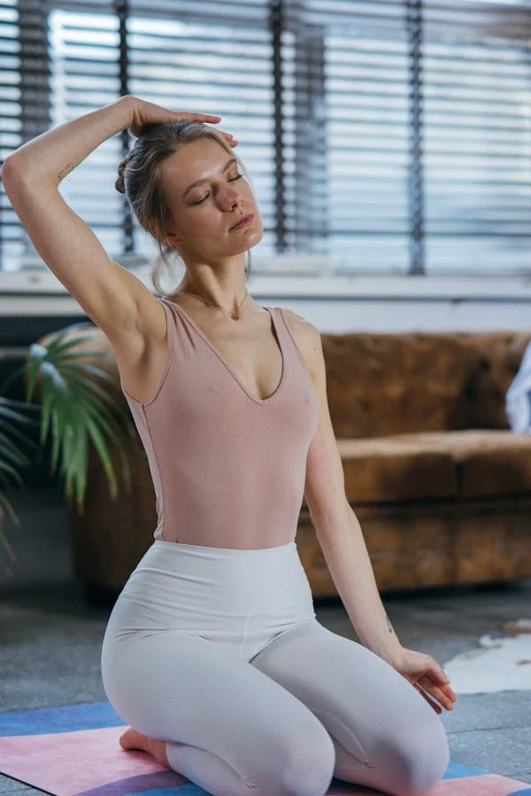
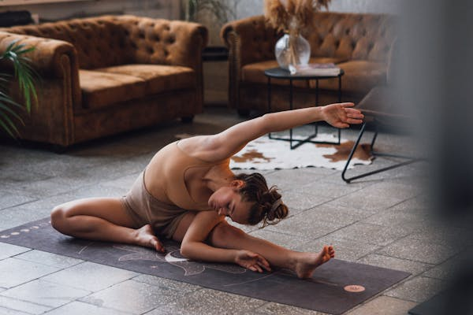

The Yin Postures
Seated meditation
- Sit in a comfortabel seated position. Place your hands on your thights or knees, straighten your back, and extend the crown of your head upwards.
- Close your eyes and visualize yourself ina peaceful place. Focus on the sensations you might feel - such as a light breeze on your face or the sound of runnign water - as if you were there.
- Imagine your body being surrounded by a warm, radiant white light.
- Inhale slow, steady breaths through your nose and imagine yourself breathing in the light.
- Allow your body and mind to relax as you exhale slowly through your nose. Remain in this position for as long as needed.
Neck release

It can help you release stress and improve your posture
- Sit in the ground in a comfortable position, crossing your legs and keeping your tailbone on the ground. Put your hands on your knees and extend the crown of your head upwards.
- Drop your left ear towards your left shoulder without letting your chin drop to your chest. Keep your shoulders level and aligned over your hips and let your head become heavy so your neck can relax.
- Reach your right arm out to your right side, putting your fingertips on the ground, and curl your left hand over your head to place it over your righ ear. Pull your head further away from your right shoulder.Hold. Slowly reverse out of the posture as you return to your starting position, then repeat on the opposite side.
Half butterfly

Opens your hips through outer hip rotation and stretches deeply into your hamstrings. It lighlty compresses your internal organs, promoting healthy digestion.
- Sit on the ground in a comfortable position, crossing your legs and keepign your tailbone on the ground. Put your hands on your kness and extend the crown of your head upwards.
- Extend your right leg out to the side and bend your left knee to place the sole of your left foot on the inside of your right thigh.
- Turn your upper body towards your right leg. put your hands on the ground to either side of your right leg, and slowly walk your hands forward, pressing your left thigh down to keep your tailbone in the ground.
- Let your upper body relax and your back round as you fold your stomach towards your right thigh until you find your edge.Hold.
Phinx
reduce lower back pain and improve spine flexibility
- Lie on your stomach, bending your elbows at 90-degree angles and stacking your hands in front of your head. Keep your hands and forearms flat on the ground. Rest your forehead on the ground and extend your legs fully behind you.
- Press your forearms into the ground and slide your hands back to lift up your head and chest. Align your elbows with your shoulders and spread your fingers wide. Extend your tailbone towards your heels and pull your chest forward, relaxing your upper body as much as possible. Hold. Inhale and exhale slow, steady breaths through your nose. Slowly reverse out of the posture.
Swan
opens hips through outer hip rotation, relief for lower back pain.
- Put your hands and knees on the ground, with your hands flat and fingers pointing forwards. Keep your spine and neck parrallel to the ground and your eyes looking down.
- Slight your right foot forward and udnerneath your body until your right knee reaches your right wrist, making you rleg almost parallel with the top of the mat. Keep the outer side of your right foot flat on the ground.
- Fully extend your left leg behind you and lower your hips to the ground, keeping the top of your left foot flat on the ground.
- Walk your hands forward until your forearms and elbows are flat on the ground. Hold. Inhale and exhale slow, steady breaths through your nose. Slowly reverse out of the posture as you return to your starting position, then repeat with the opposite leg.
Child's pose
Calms your nerves and encourages the relaxation of body and mind.
- Place your hands and knees on the ground, with your hands flat and your fingers pointing forward. keep your soine and neck parallel to the ground and your eyes looking down.
- Bring your feet together until your big toes touch. Push your hips back and down, bringing them as close to your heels as possible, and rest your head on the ground.
- Extend your arms towards the back of your mat, turning your palms upwards and keeping the backs of your hands flat on the ground. Let your shoulders rest on your knees. Hold.
Knees to chest
A restorative and meditative posture to do anytime when you feel stressed.
- Lie on your back and bend your knees, with your feet flat on the ground and your knees together. Relax your arms at your sides and keep your hands flat on the ground.
- Bring your knees towards your chest, wrap your arms around your knees, and position each hand just below its opposite knee, Keep your head and shoulders on the ground, but lift your tailbone off the ground. Hold. Inhale and exhale slowly, steady breaths through your nose. Slowly reverse out of the posture.